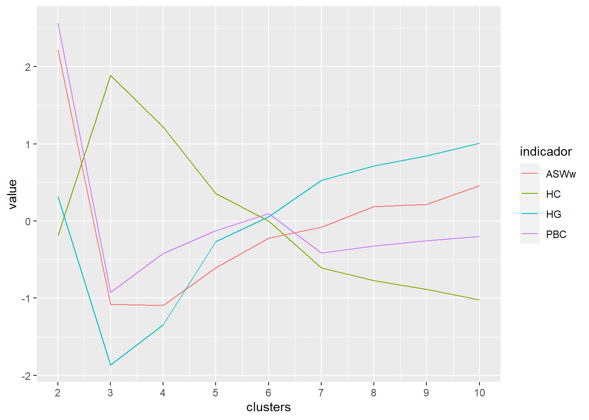
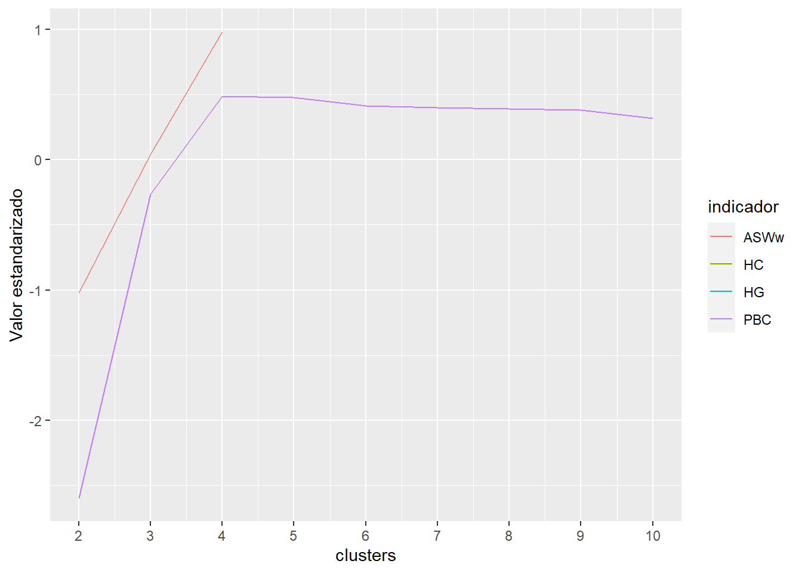
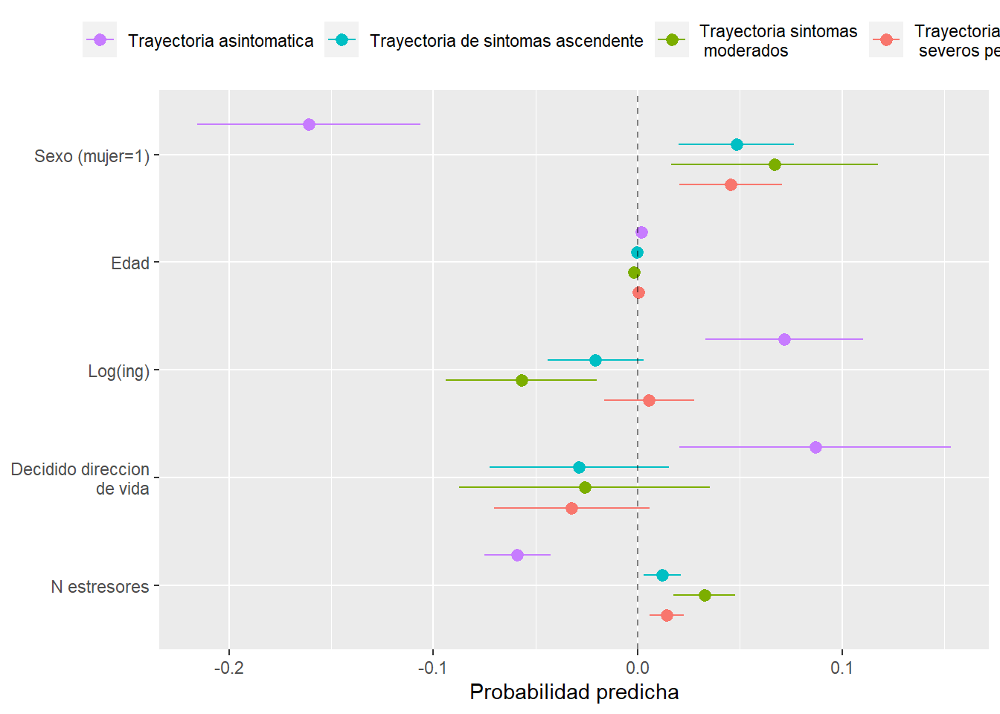
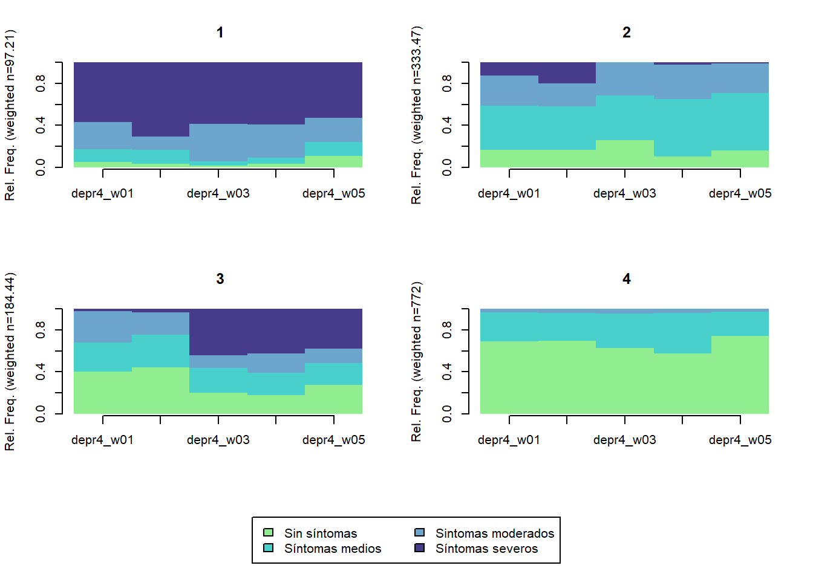
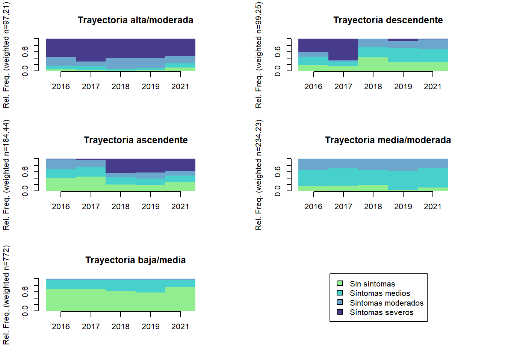
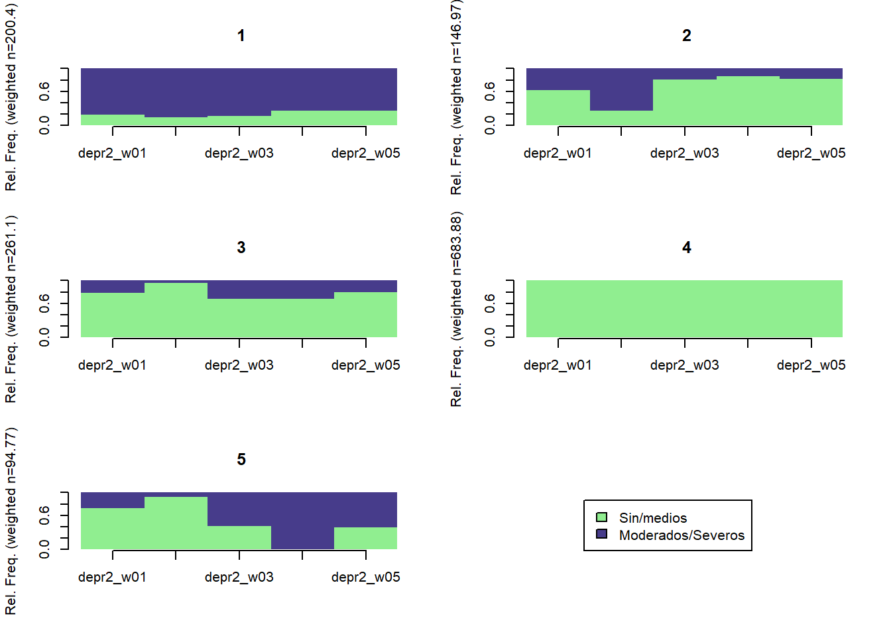
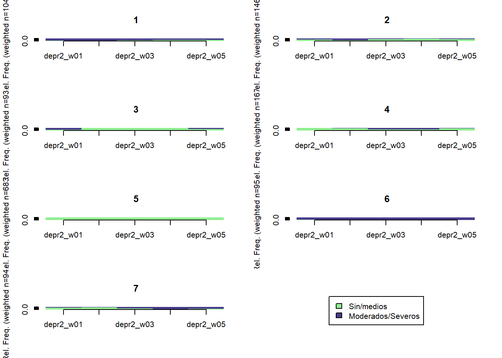

Capítulo 1 Trayectorias de sintomatología depresiva. Modelo Optimal-Matching
1.1 Secuencia de depresión con 4 categorías:
# Crear objeto con secuencias
seq.depr4 <- TraMineR::seqdef(elsoc_salud,
var = c('depr4_w01', 'depr4_w02', 'depr4_w03', 'depr4_w04', 'depr4_w05'),
states = c('Sin síntomas', 'Síntomas medios', 'Síntomas moderados', 'Síntomas severos'),
labels = c('Sin síntomas', 'Síntomas medios', 'Sintomas moderados', 'Síntomas severos'),
weights = elsoc_salud$ponderador02_w01,
cpal = c('lightgreen', 'mediumturquoise', 'skyblue3', 'slateblue4'))1.1.1 Gráfico de secuencias:
Muestra todas las secuencias, ordenadas según la suma total del indice phq9 (sumando las 5 olas)
TraMineR::seqIplot(seq.depr4, border = NA, xtlab = c(2016:2019, 2021),
space = 0, sortv = elsoc_salud$phq_sum)
1.1.2 Frecuencia de estados y transiciones
seqstatd(seq.depr4)## [State frequencies]
## depr4_w01 depr4_w02 depr4_w03 depr4_w04 depr4_w05
## Sin síntomas 0.480 0.49 0.44 0.37 0.496
## Síntomas medios 0.303 0.30 0.32 0.38 0.297
## Síntomas moderados 0.145 0.11 0.14 0.15 0.118
## Síntomas severos 0.072 0.10 0.10 0.10 0.089
##
## [Valid states]
## depr4_w01 depr4_w02 depr4_w03 depr4_w04 depr4_w05
## N 1387 1387 1387 1387 1387
##
## [Entropy index]
## depr4_w01 depr4_w02 depr4_w03 depr4_w04 depr4_w05
## H 0.85 0.86 0.89 0.9 0.85seqtrate(seq.depr4)## [-> Sin síntomas] [-> Síntomas medios]
## [Sin síntomas ->] 0.6315011 0.2732770
## [Síntomas medios ->] 0.3831385 0.4058737
## [Síntomas moderados ->] 0.1763785 0.3718435
## [Síntomas severos ->] 0.1974423 0.2106458
## [-> Síntomas moderados] [-> Síntomas severos]
## [Sin síntomas ->] 0.05812547 0.03709645
## [Síntomas medios ->] 0.14048374 0.07050413
## [Síntomas moderados ->] 0.24994502 0.20183294
## [Síntomas severos ->] 0.25802652 0.333885391.1.3 Clusters de secuencias:
# Medir distancias entre secuencias usando analisis de secuencias usando optimal matching analysis
# Se define matriz de costos de sustitución basados en valores medios de indice phq9
substitution_cost_matrix <- as.matrix(rbind(c(0, 5, 10, 19),
c(5, 0, 5, 14),
c(10, 5, 0, 9),
c(19, 14, 9, 0)))
dist.depr4 <- TraMineR::seqdist(seq.depr4,
method = "OM",
sm = substitution_cost_matrix)
# Construir tipos de trayectorias con analisis de cluster jerarquico Ward
ward.depr4 <- cluster::agnes(dist.depr4, diss = TRUE, method = 'ward')Indicadores de calidad de partición:
Se evalúa según los indicadores:
kableExtra::kbl(data.frame(indicador = c('Point Biserial Correlation', "Hubert's Somers' D",
"Hubert's C", "Average Silhouette Width (weighted)"),
abreviacion = c('PBC', 'HGSD', 'HC', 'ASWw'),
interpretacion = c('Mide la capacidad de la clusterización de reproducir las distancias',
'Mide la capacidad de la clusterización de reproducir las distancias tomando en cuenta empates en distancias',
'Mide la brecha entre la clusterización obtenida y la mejor partición teóricamente posible con este número de grupos y distancias',
'Mide la coherencia de asignaciones. Alta coherencia indica una alta distancia entre grupos y fuerte homogeneidad inter-grupal')))| indicador | abreviacion | interpretacion |
|---|---|---|
| Point Biserial Correlation | PBC | Mide la capacidad de la clusterización de reproducir las distancias |
| Hubert’s Somers’ D | HGSD | Mide la capacidad de la clusterización de reproducir las distancias tomando en cuenta empates en distancias |
| Hubert’s C | HC | Mide la brecha entre la clusterización obtenida y la mejor partición teóricamente posible con este número de grupos y distancias |
| Average Silhouette Width (weighted) | ASWw | Mide la coherencia de asignaciones. Alta coherencia indica una alta distancia entre grupos y fuerte homogeneidad inter-grupal |
# Comparar soluciones con diferentes numeros de trayectorias (se prueban de 2 a 10 clusters)
ward.range.depr4 <- WeightedCluster::as.clustrange(ward.depr4,
diss = dist.depr4,
ncluster = 10)
# Visualizar clusters:
ward.range.depr4$stats %>%
mutate(clusters = 2:10) %>%
pivot_longer(cols = c(ASWw, HG, PBC, HC),
names_to = 'indicador',
values_to = 'value') %>%
group_by(indicador) %>%
mutate(value = (value - mean(value, na.rm = TRUE)) / sd(value, na.rm = TRUE)) %>%
ggplot(aes(y = value, x = clusters, color = indicador, group = indicador)) +
geom_line() +
scale_x_continuous(breaks = 2:10)
Para ASWw, HG y PBC, mientras más alto el valor indica una mejor calidad en la partición. Para HC mientras más bajo es mejor. Los mejores valores parecen estar entre 4 y 5 clusters.
1.1.4 Graficos de secuencias por clusters
Pruebas con 4-5 clusters
TraMineR::seqfplot(seq.depr4, group = stats::cutree(ward.depr4, k = 4),
border = NA,
space = 0, idxs = 0, xtlab = c(2016:2019, 2021))
TraMineR::seqdplot(seq.depr4, group = stats::cutree(ward.depr4, k = 4),
border = NA,
space = 0)
TraMineR::seqfplot(seq.depr4, group = stats::cutree(ward.depr4, k = 5),
border = NA,
space = 0, idxs = 0, xtlab = c(2016:2019, 2021))
TraMineR::seqdplot(seq.depr4, group = stats::cutree(ward.depr4, k = 5),
border = NA,
space = 0)1.1.5 Opción preferida: 5 clusters
Me gusta la opción con 5 clusters. Nombres provisorios: - Trayectoria alta/moderada - Trayectoria descendente - Trayectoria ascendente - Trayectoria media/moderada - Trayectoria baja/media
seq.depr4$cluster <- factor(stats::cutree(ward.depr4, k = 5),
levels = 1:5,
labels = c('Trayectoria alta/moderada',
'Trayectoria descendente',
'Trayectoria ascendente',
'Trayectoria media/moderada',
'Trayectoria baja/media'))
TraMineR::seqfplot(seq.depr4, group = seq.depr4$cluster,
border = NA,
space = 0, idxs = 0,
xtlab = c(2016:2019, 2021))
TraMineR::seqdplot(seq.depr4, group = seq.depr4$cluster,
border = NA,
space = 0,
xtlab = c(2016:2019, 2021))
1.2 Secuencia de depresión con 2 categorías
# Crear objeto con secuencias
seq.depr2 <- TraMineR::seqdef(elsoc_salud,
var = c('depr2_w01', 'depr2_w02', 'depr2_w03', 'depr2_w04', 'depr2_w05'),
states = c('Sin síntomas/sintomas medios', 'sintomas moderados/severos'),
labels = c('Sin/medios', 'Moderados/Severos'),
weights = elsoc_salud$ponderador02_w01,
cpal = c('lightgreen', 'slateblue4'))1.2.1 Gráfico de secuencias:
Hay 32 secuencias en total
TraMineR::seqIplot(seq.depr2, border = NA, xtlab = c(2016:2019, 2021),
space = 0, sortv = elsoc_salud$phq_sum)
1.2.2 Clusters de secuencias:
dist.depr2 <- TraMineR::seqdist(seq.depr2, method = "OM", sm = 'CONSTANT')
# Construir tipos de trayectorias con analisis de cluster jerarquico Ward
ward.depr2 <- cluster::agnes(dist.depr2, diss = TRUE, method = 'ward')
# Comparar soluciones con diferentes numeros de trayectorias (se prueban de 2 a 10 clusters)
ward.range.depr2 <- WeightedCluster::as.clustrange(ward.depr2,
diss = dist.depr2,
ncluster = 10)
# Visualizar clusters:
ward.range.depr2$stats %>%
mutate(clusters = 2:10) %>%
pivot_longer(cols = c(ASW, ASWw, HG, PBC, HC),
names_to = 'indicador',
values_to = 'value') %>%
group_by(indicador) %>%
mutate(value = (value - mean(value, na.rm = TRUE)) / sd(value, na.rm = TRUE)) %>%
ggplot(aes(y = value, x = clusters, color = indicador, group = indicador)) +
geom_line() +
scale_x_continuous(breaks = 2:10)
En este caso al parecer mientrás más clusters es mejor.
1.2.3 Gráficos de secuencia por clusters
Pruebas con 4-7 clusters
TraMineR::seqfplot(seq.depr2, group = stats::cutree(ward.depr2, k = 4),
border = NA,
space = 0, idxs = 0, xtlab = c(2016:2019, 2021))
TraMineR::seqdplot(seq.depr2, group = stats::cutree(ward.depr2, k = 4),
border = NA,
space = 0)
TraMineR::seqfplot(seq.depr2, group = stats::cutree(ward.depr2, k = 5),
border = NA,
space = 0, idxs = 0, xtlab = c(2016:2019, 2021))
TraMineR::seqdplot(seq.depr2, group = stats::cutree(ward.depr2, k = 5),
border = NA,
space = 0)
TraMineR::seqfplot(seq.depr2, group = stats::cutree(ward.depr2, k = 6),
border = NA,
space = 0, idxs = 0, xtlab = c(2016:2019, 2021))
TraMineR::seqdplot(seq.depr2, group = stats::cutree(ward.depr2, k = 6),
border = NA,
space = 0)TraMineR::seqfplot(seq.depr2, group = stats::cutree(ward.depr2, k = 7),
border = NA,
space = 0, idxs = 0, xtlab = c(2016:2019, 2021))TraMineR::seqdplot(seq.depr2, group = stats::cutree(ward.depr2, k = 7),
border = NA,
space = 0)